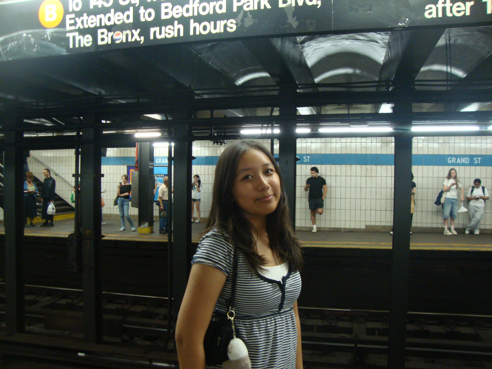

About Me
heya there!!

A little bit about me...
I'm a 10th grader! I'm Tibetan American and participated in the Girls Who Code 2026 Summer Pathways Program.
When I'm not coding, I love dancing, spending time with my friends, and exploring new interests.
I'm especially interested in computer science and finding ways technology can make a positive impact.
Hackathon Achievement!
I participated in the Sunbeam NYC Hackathon, where my project, Perfect Day, won the Best Interpretation Award!

Coding
I enjoy building websites and other fun things!
Creativity
I love drawing, junk journaling, and trying new creative projects.
Technology
I'm interested in computer science, technology, and learning how things work.